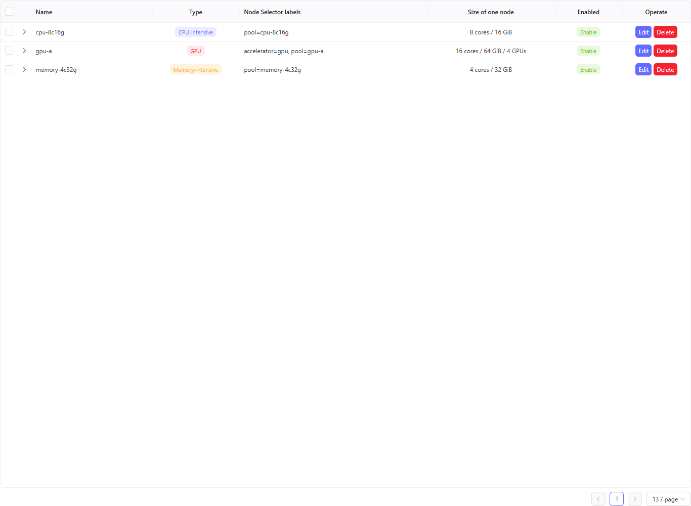
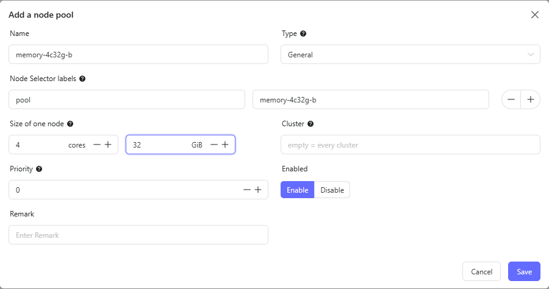
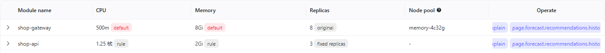

What a node pool is
A node pool is a group of Kubernetes nodes of one shape: told apart by Node Selector labels, with the CPU and memory one node gives to Pods (and the GPUs of a GPU node) and what it is for. The platform recommends the pool that fits the Pod of a module best, shown with the CPU, memory and replicas recommendation; whether the workload is really moved there is decided by the run mode of the module (see Run mode).

How to configure
The first-level menu "Node pools": add or edit a pool.
| Setting | Meaning | How to set it |
|---|---|---|
| Name | Unique in a cluster. | Write the shape in it, for example memory-4c32g. |
| Type | CPU-intensive, memory-intensive, GPU, general. | By the ratio of cores to memory: 8 cores and 16 GiB is a CPU pool, 4 cores and 32 GiB a memory pool, nodes with GPUs a GPU pool. |
| Node Selector labels | The labels that select the nodes of the pool; several can be given. | The same as the labels on the nodes, for example pool = memory-4c32g. |
| Size of one node | What one node gives to Pods (the allocatable of the node, not the machine); a GPU pool also gives the GPUs of a node. | Required for a pool that is on: without it the number of Pods a node holds cannot be worked out. |
| Cluster | The cluster the pool is in; empty means every cluster has nodes with these labels. | Only for several clusters with different pools. |
| Priority | When two pools fit equally well, the higher number is recommended first. | Usually not needed. |

How it is recommended
Switch "Recommend a node pool" on in the "Node pool" section of the module. At every recommendation the platform takes the CPU and memory of the Pod of that recommendation and works out, for every pool that is on, how many such Pods one node holds and how much of its CPU and memory they use. The pool with the highest mean of the two shares is recommended; on a tie the priority decides, then the smaller node.
- A Pod of 200m CPU and 4 GiB: 8 fit a 4-core 32-GiB node and fill its memory and 40% of its CPU; 4 fit an 8-core 16-GiB node and fill its memory and 10% of its CPU, so the memory pool is recommended.
- A Pod of 2 cores and 3 GiB: 4 fit an 8-core 16-GiB node and fill its CPU and 75% of its memory, so the CPU pool is recommended.
- A Pod that asks for GPUs is only recommended a GPU pool, and a Pod that does not is never recommended one.
- A Pod that does not fit a node, a pool that is off, and a pool of another cluster take no part.

What the recommendation does
| Run mode | Node pool |
|---|---|
| Observe only | Nothing is recommended, so no pool. |
| Recommend only | Shown only. |
| Admission | When a workload is created or updated, the answer of admission carries the Node Selector of the pool and the Kyverno policy puts it on the Pod; the labels of a pool are read at every answer, so a change reaches the next Pod. |
| Auto | As admission; an operator started with --adjust-pod-spec also writes the Node Selector on the Pod template of the workload and removes the labels of the other pools, which rolls the Pods. The default role of the operator cannot change workloads: grant it with adjustPodSpec.enabled in the Helm chart or deploy/operator/rbac/role-pod-spec.yaml. |
The operator writes only what the platform says in its answer of that moment, never an answer it remembered: while the platform cannot be reached it changes no workload spec.